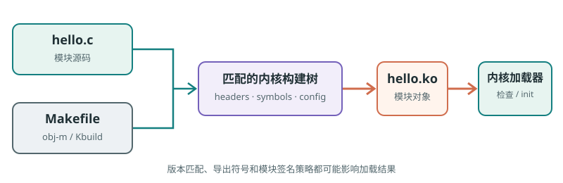

阅读 Linux 内核源码时，最重要的不是一次看懂整个仓库，而是知道一个问题通常会落在哪些子系统、配置项和构建规则中。本章从源码目录开始，接着核对内核编码规范，再构建一个真正独立的外部模块，最后区分 Kconfig 配置与 Kbuild 编译目标。
一、Linux内核源码目录树
Linux 顶层目录按子系统和构建职责组织。下面是便于入门的概览；目录内容会随内核版本变化，某些功能也会横跨多个目录。
linux/
├── arch/ # 架构相关代码：启动、页表、中断、汇编
├── block/ # 块设备层与块 I/O 基础设施
├── crypto/ # 内核加密 API 与算法实现
├── Documentation/ # 内核文档
├── drivers/ # 设备驱动与设备子系统
├── fs/ # VFS 和具体文件系统
├── include/ # 内核与 UAPI 头文件
├── init/ # 内核初始化与启动后期入口
├── ipc/ # 进程间通信子系统
├── kernel/ # 调度、进程、锁、时间等核心机制
├── lib/ # 内核通用库
├── mm/ # 内存管理
├── net/ # 网络协议栈
├── samples/ # 示例代码
├── scripts/ # 构建、配置和维护脚本
├── security/ # 安全框架与相关实现
├── sound/ # 音频子系统
├── tools/ # perf、selftests、bpftool 等工具
├── usr/ # initramfs 等用户空间归档构建支持
└── virt/ # 虚拟化相关公共代码| 研究问题 | 建议入口 | 不要误解为 |
|---|---|---|
| CPU 架构启动与页表 | arch/、init/ | 所有架构都共享同一启动路径 |
| 进程、调度和锁 | kernel/ | 调度器全部代码只在一个文件 |
| 页分配与虚拟内存 | mm/ | 所有内存相关功能都不涉及其他子系统 |
| 文件系统 | fs/、include/ | 文件系统不依赖块层、网络或内存管理 |
| 设备驱动 | drivers/ 与对应子系统文档 | 驱动代码都遵循完全相同的模型 |
目录规模不是可靠的架构指标。drivers/ 通常很大，但“驱动占全内核代码 60%”会随版本、配置和统计口径变化，不适合当成固定事实。读源码时先找到公开接口、数据结构和调用者，再沿着调用路径深入。
二、内核编码风格
Linux 内核官方 Coding Style 文档说明：缩进使用 8 列宽的 Tab；单行长度首选 80 列；多语句块使用花括号；代码风格的目标是可读性和可维护性，而不是为了美观。
scripts/checkpatch.pl 可以帮助检查补丁中的常见风格问题，但内核提交指南明确指出，它是辅助工具，不能替代人工判断。不要把“所有提交都必须无条件通过 checkpatch”描述成机械门槛。
if (condition) {
do_one_thing();
do_another_thing();
}写注释时优先解释不明显的设计原因、锁约束、生命周期和错误处理；避免重复代码已经清楚表达的内容。

三、第一个内核模块
外部模块是一个可独立构建的内核扩展。它在内核特权域运行，因此错误可能导致 Oops、死锁或系统崩溃。先在可回滚的虚拟机里实验，不要在生产主机上直接加载未经验证的模块。
1. hello.c
#include <linux/init.h>
#include <linux/module.h>
#include <linux/printk.h>
static int __init hello_init(void)
{
pr_info("os-tutorial: hello, kernel\n");
return 0;
}
static void __exit hello_exit(void)
{
pr_info("os-tutorial: goodbye, kernel\n");
}
module_init(hello_init);
module_exit(hello_exit);
MODULE_LICENSE("GPL");
MODULE_AUTHOR("OS tutorial");
MODULE_DESCRIPTION("A minimal external kernel module");module_init() 和 module_exit() 声明模块装载与卸载时的入口。__init 标记用于可在初始化完成后释放的代码段；MODULE_LICENSE() 声明模块许可信息，影响 GPL-only 符号可用性及内核 taint 标记。它不是一个可以随意省略且没有后果的装饰字段。
本章配套源文件：hello.c。
2. Makefile 与 Kbuild
obj-m += hello.o
# 其余构建规则见 labs/ch06-hello-module/MakefileKDIR 必须指向与目标内核版本匹配、且具备构建外部模块所需配置和生成文件的内核构建目录。发行版通常通过 /lib/modules/$(uname -r)/build 提供对应链接；若运行内核与安装的头文件包不匹配，构建或加载可能失败。
3. 编译、检查与加载
make
modinfo ./hello.ko
sudo insmod ./hello.ko
lsmod | grep '^hello'
sudo dmesg | tail
sudo rmmod hello
sudo dmesg | tail输出会因内核版本和发行版而不同。若加载失败，先检查 dmesg 中的拒绝原因、模块 vermagic、导出符号和签名策略。启用了强制模块签名验证的内核只接受受信任密钥签名的模块；Secure Boot 环境尤其需要留意这一点。
官方步骤见 Building External Modules 和 Kernel Module Signing Facility。
四、Kconfig/Kbuild编译体系
1. Kconfig：描述选项与依赖
Kconfig 描述配置项的类型、提示、依赖、默认值和帮助信息。常见类型包括 bool、tristate、string、int 和 hex。tristate 通常用 n 表示不构建、y 表示编入内核、m 表示构建为模块；但具体选项能否取值 m 取决于依赖和模块支持。
config OS_TUTORIAL_HELLO
tristate "OS tutorial hello module"
depends on MODULES
help
Build the OS tutorial example as a loadable module.这是配置语法示例；要让选项进入真实内核配置菜单，还需要在适当的上级 Kconfig 中 source 它，并在相应 Makefile 中连接配置变量。现代 Kconfig 使用 help 块，不再沿用旧式 ---help--- 写法。
2. Kbuild：描述构建目标
# 编入内核镜像
obj-y += example.o
# 构建为外部模块
obj-m += hello.o
# 由配置选项决定是否编译
obj-$(CONFIG_OS_TUTORIAL_HELLO) += hello.oKconfig 决定“用户可以选择什么、选项之间有什么依赖”；Kbuild Makefile 决定“选中某个配置后构建哪些对象”。二者协作，但不是同一套语言。对独立外部模块而言，最小示例通常只需要 obj-m 和外部模块构建命令，不必先修改主线内核 Kconfig。
五、结语与下一章预告
读内核源码的路线是：先识别子系统，再追踪数据结构和调用链；构建模块时要匹配内核构建树、理解 Kbuild 目标并尊重签名策略。下一章将用 QEMU、GDB 和 xv6 建立一个可重复的实验环境，让我们在虚拟机器里观察内核的执行过程。
本章自测 · 从概念走向验证
解释 Kconfig 和 Kbuild 的分工，并列出外部模块构建和加载失败时至少三项检查。
查看思考提示
检查目标内核构建目录、vermagic/导出符号、模块签名策略与内核日志。